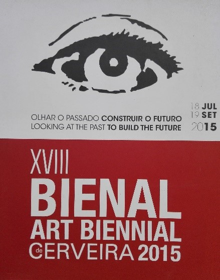
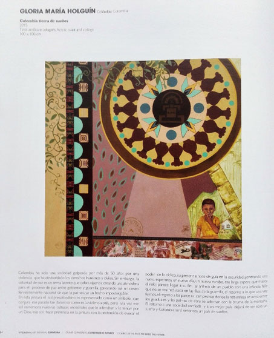

Portugal: XVIII Bienal de Cerveira - Mirar el pasado para construir el futuro
En abril de 2015 recibí con gran felicidad la noticia de que mi obra: “Colombia tierra de sueños” El cual representaba la esperanza de que en el país se acabara el conflicto armado a través de un sol precolombino que conjurara tales hechos de violencia, había sido seleccionada para participar en la XVIII Bienal de Cerveira - Mirar el pasado para construir el futuro - en Portugal. Para satisfacción actual ya el proceso de paz es un hecho.

